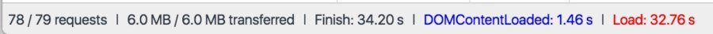
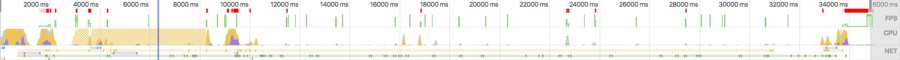
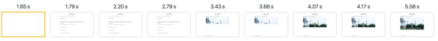
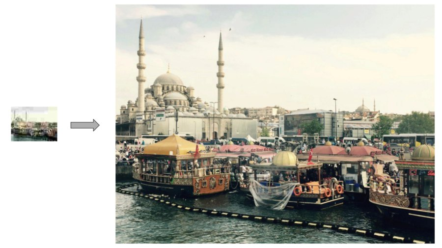
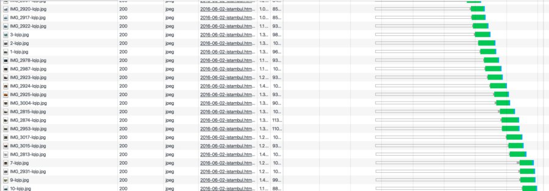
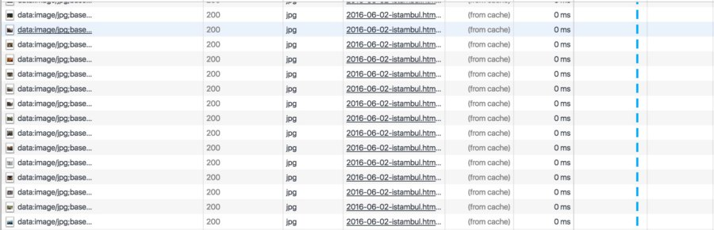
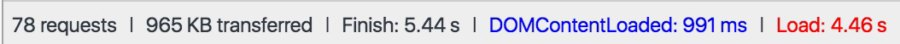

Website image optimization story
So, I decided to write a blog post …
The idea of this blog post was born during the time of creation of my previous post about Istanbul. As it is already clear that blog post was about traveling to Istanbul. It was quite a nice travel with a lot of impressions and photos. So, as a result, I created a brief overview of the whole travel and attached a lot of photos to my article. To be precise there are 36 photos now.
One does not simply write and publish the blog post
So far so good, when I finished my post I thought about image compression. Because 36 photos without any size reduction were taking near 40 MB of space and that is quite a huge amount of data to load. As I have read somewhere on the internet the average page load size is 2 MB. So it is clear that we have run out of this limit.
Step 1. Resize and compress all images
I looked over existing solutions and approaches and decided to use imagemagick. It’s quite a nice tool with a good documentation and tons of examples all over the internet. After a few minutes looking over available commands and options i decided to search for some reasonable config that will be able to reduce image sizes without any significant visible changes and quality loose. After some period of searching, I ended up with this config (thanks to this awesome article):
mogrify -filter Triangle \
-define filter:support=2 \
-thumbnail OUTPUT_WIDTH \
-unsharp 0.25x0.08+8.3+0.045 \
-dither None \
-posterize 136 \
-quality 86 \
-define jpeg:fancy-upsampling=off \
-define png:compression-filter=5 \
-define png:compression-level=9 \
-define png:compression-strategy=1 \
-define png:exclude-chunk=all \
-interlace none \
-colorspace sRGB INPUT_PATHSo I wrapped that in a small shell script - smartresize.sh:
smartresize.sh
smartresize() {
echo "smart resize >>> $1 to $2"
mogrify -filter Triangle \
-define filter:support=2 \
-thumbnail $2 \
-unsharp 0.25x0.08+8.3+0.045 \
-dither None \
-posterize 136 \
-quality 86 \
-define jpeg:fancy-upsampling=off \
-define png:compression-filter=5 \
-define png:compression-level=9 \
-define png:compression-strategy=1 \
-define png:exclude-chunk=all \
-interlace none \
-colorspace sRGB $1
}
smartresize $1 $2Just to be able to run that for all files (jpg) in some image dir I wrote a little rule in a Makefile:
compress:
find tmp_img/ -name "*.jpg" -print0 | xargs -0 -n1 -I {} sh smartresize.sh {} 900And after that, I can place raw images inside tmp_img/ folder and run make compress. That will resize all my big images to smaller versions with max width or height in 900px and will reduce the quality a little bit. This optimization works much better than photoshop’s “safe for the web” function (near 35% better). And this script reduced almost 90% of image sizes (not bad for a bash one-liner). At this point I could stop and publish my post, but I decided to go further and to make some more optimizations (:
Image load statistics after basic compression
Here is page load statistics after images size reduction (I have added throttling to make things look like more real with networking penalty from good 3G connection):

Really huge numbers for page load. Let’s look what part of page load are taken by images (remember there are 36 photos on the page):
So we see that 5.5 MB of overall 6 MB content was just images load. If we will look at page load timeline things will be not so terrifying because at time 1.64 s we can actually start reading and see some part of images (thanks to progressive jpeg) and at 3.55s we can see also the images.
Here is timeline for amount of work that is executed during that 32 seconds of page load:

It is clear that even though we can see some readable content at time 3.4s there are still a lot of things going on on a background that is consuming our computation resources during 32 seconds and make us far away from 60 fps during that time. We can do much better!
Step 2. Lazy load
There is no point in loading all images on the page load. The best approach that is commonly used all over the internet is to use lazy image loading. In the previous example, all 36 images were loaded all at once right after dom content was loaded. I used lazysizes to perform lazy load task. Here is how I need to change my image tags to load images on demand. Instead of:
<img src="some-image.jpg"/>I need to use:
<img data-src="some-image.jpg" class="lazyload"/>Let’s refresh page and look at the stats:
Much better! We reduced the number of initial requests. Now it takes 1.8MB to load our page, and we have Load event at 9.96s instead of 32.76s. But despite this optimization we can observe some problem while looking at the page load screenshots:

The page load looks very junky. As it expected after dom content loaded at 1.79s we can see text without images but when images are become available it starts jumping and creates a poor user experience.
Step 3. Preview (LQIP)
LQIP - stands for low-quality image pattern. So the main idea is that instead of an empty src attribute inside the image tag you are placing some preload image with a smaller size. This will allow you to preload some low-quality image (often blurred).
To achieve this, I need to generate those low-quality preview images for each image and place them to img src attribute. Here is another bash script that does that:
find _site/images/ -name "*.jpg" | \
grep -v "lqip" | \
sed 'p;s/\.jpg/\-lqip.jpg/' | \
xargs -n2 convert -resize 100 -strip -interlace Plane -quality 10We are traversing all images inside _site/images directory, and creating *-lqip.jpg images with the help of convert tool from ImageMagick.
As a result we are getting something like this:

Lets look how our page load process changed:
Here is what image preloaders are looks like:
Let’s examine page load stats:
the previous one (without LQIP):
with LQIP:
You see that this technique gives us much better results. Our page is not jumping during the images load. Page size is now less than 1MB and we have load event on 5.69s instead of previous 9.96s.
Step 4. Inline preview images with base64
Let’s look at the images download timeline:

We see that still we have a huge amount of requests for lqip images. That thing can be also optimized. Since my site is just a bunch of static pages that are generated from markdown I can inline all lqip images right into the result HTML pages. I wrote a little script that replaces all src attributes with base64. And here is the result:

As you see all preview images are fetched at the same time with zero network requests. I added some blur effect to preload images and here is how it looks like now:
Here are numbers for page load with inlined previews:
previous (without inlined previews)
with inlined previews:
Things are become better now. You can see that Finish and Load event are 1-second faster.
Step 5. Optimize for mobile
So far so good, we still can do more optimizations. We can reduce extra work that is done for resizing images to make them feet the screen size on mobile devices. Also, we can load smaller images depending on screen width. Fortunately, plugin that I have chosen for image lazy load supports that. Here is how it looks like in usage:
<img src=”base64”
data-sizes="auto"
data-srcset=”img_900.jpg 900w,
img_600.jpg 600w”/>You can specify the appropriate image for different screens. So if you are loading page from a mobile device the browser will load smaller images.
Here are numbers for mobile version:
not optimized:
the same page place with optimized:

As you can see it also gives some performance boost.
Conclusion
Image optimization matters. Images are taking the most place of your page load data. You should care about how to make them small and how to deliver them to the client as fast as possible.
Here are some related links about image optimizations:
The technology behind facebook cover photos
Check list from Google for image optimization
P.S.
Here is the Makefile that automates all optimization work https://github.com/AlexMost/blog/blob/master/Makefile